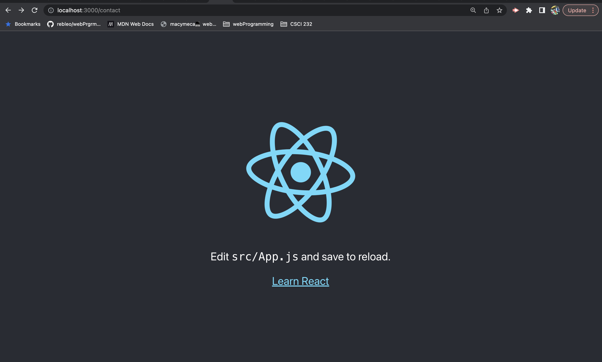
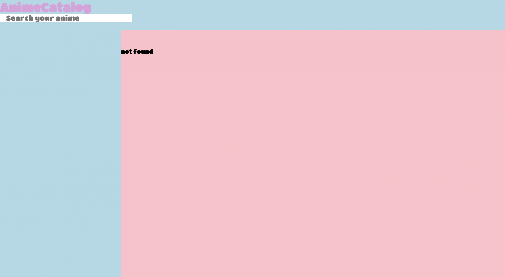
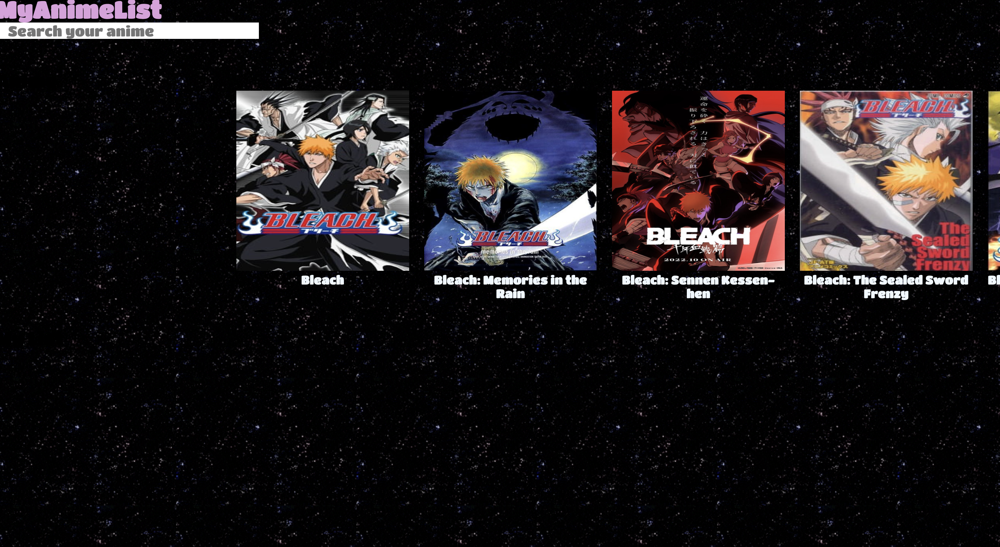
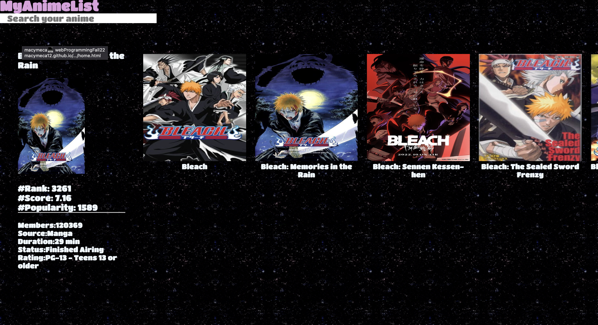
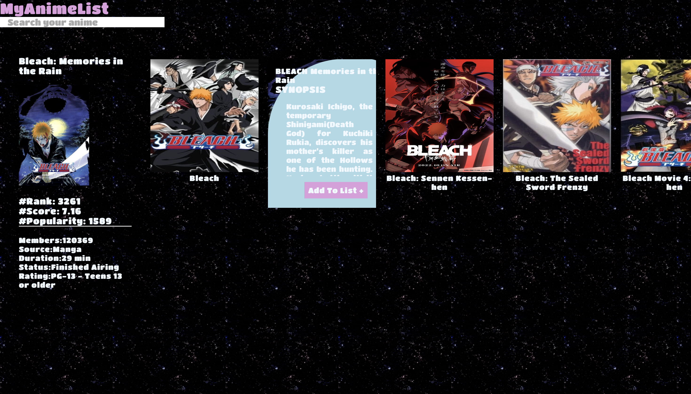
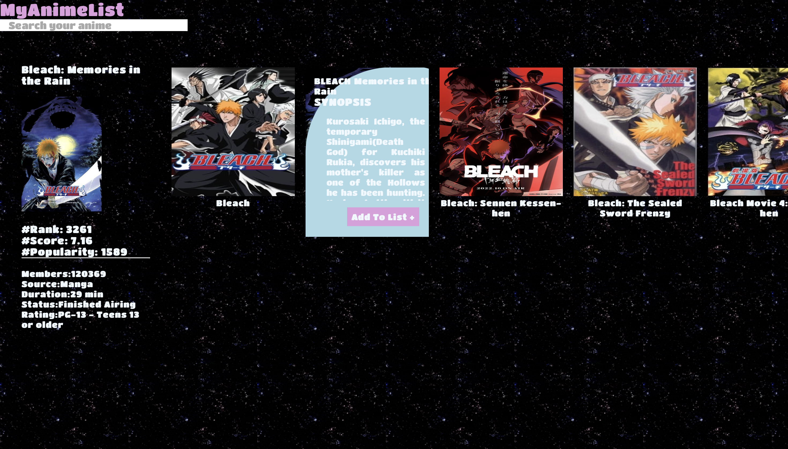

I wanted to revamp an old project that i worked on last year. I was new to api so I wasnt too familiar with it. I decided that I wanted to get more into the world of javascript libraries so i decided to use React since i hear so much about it. The api i used was the Anime Api jkns.
While I was working on my original i found out i had a lot of errors in console log. The api link wan't working even though their was still sources for it on the api page. So i scrapped it and decided to start from new.
  In the final results you can save shows in your own list and can remove them. on the left side theres is some stats about the show. One thing i was stuck on and didn't realise last minute that i can't call the react page directly with github pages so i'm still trying to figure how to deploy a react app on github.
 
